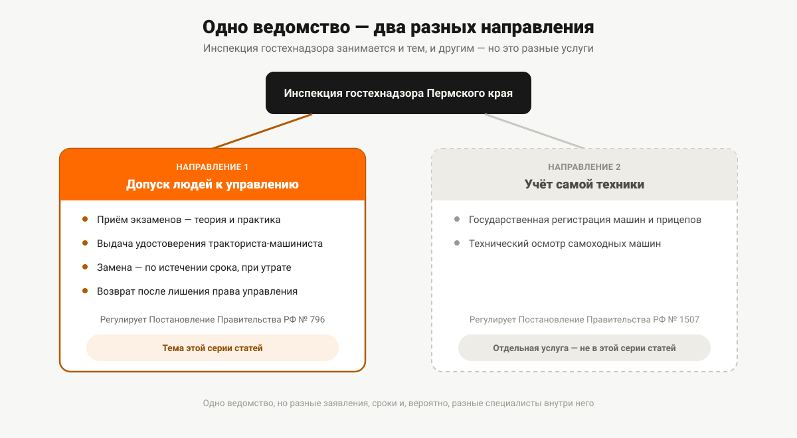

Гостехнадзор Пермского края и права тракториста
Экзамены принимает и удостоверения выдаёт инспекция гостехнадзора Пермского края, а не ГИБДД и не учебная организация. Что входит в её полномочия и как выбирают место сдачи.
Про ГИБДД знает каждый, кто хоть раз получал водительские права. Про орган, который принимает экзамены и выдаёт удостоверения на трактор, комбайн или снегоход, обычно узнают только в тот момент, когда эта техника уже куплена и нужно разбираться, куда с ней идти. Разбираемся, что это за ведомство, за что оно отвечает и по какому принципу выбирается конкретное место сдачи экзамена.
Почему в каждом регионе — свой орган
Экзамены на право управления самоходными машинами и выдачу удостоверений принимает не федеральное ведомство с единой сетью филиалов, а региональные органы. Пункт 1 Правил допуска к управлению самоходными машинами (постановление Правительства РФ от 12.07.1999 № 796) формулирует это прямо: порядок допуска граждан устанавливают «исполнительные органы субъектов Российской Федерации, уполномоченные на осуществление регионального государственного контроля (надзора) в области технического состояния и эксплуатации самоходных машин и других видов техники» — и здесь же норма вводит для них общее название: «органы гостехнадзора». В каждом субъекте РФ такой орган свой, подчинён региональному правительству, а не Москве напрямую.
В Пермском крае эту функцию выполняет региональный орган, который на дату подготовки статьи действует под названием Инспекция государственного технического надзора Пермского края. Дальше в тексте для краткости — «инспекция» или «орган гостехнадзора».
Что относится к допуску, а что — к технике
У инспекции гостехнадзора в принципе два разных направления работы, которые часто путают между собой:
- Допуск людей к управлению — приём экзаменов, выдача, замена и возврат удостоверений тракториста-машиниста. Это то, что регулируют Правила допуска (ПП-796), и то, чему посвящена вся эта серия статей.
- Учёт самой техники — государственная регистрация тракторов, самоходных машин и прицепов к ним, технический осмотр. Эти вопросы регулирует отдельный документ — Правила государственной регистрации самоходных машин и других видов техники (постановление Правительства РФ от 21.09.2020 № 1507), и они не входят в границы этой статьи.
Формально оба направления — в ведении одной и той же региональной инспекции, но это разные государственные услуги с разными заявлениями, разными сроками и, вероятно, разными специалистами внутри самого ведомства. Если ваш вопрос — не «как получить права», а «как поставить трактор на учёт» или «где пройти техосмотр», вы обращаетесь туда же, но по другому поводу — и рассчитывать на ответ по этому поводу в рамках настоящей статьи не стоит.

Где принимают экзамены: два варианта
Пункт 12 Правил допуска устанавливает принцип выбора места сдачи экзамена, и он один на всю страну — региональной специфики в нём нет. Экзамен принимается:
- по месту жительства (месту пребывания) гражданина — при наличии регистрации по этому адресу;
- либо по месту нахождения организации, осуществляющей образовательную деятельность, в которой гражданин прошёл профессиональное обучение.
Та же норма уточняет: приём экзаменов, как правило, совмещён с итоговой аттестацией по завершении обучения — то есть для тех, кто учился в организации на территории того же региона, где он и живёт, разница между двумя вариантами обычно не имеет практического значения. Она становится важной, если человек учился в одном регионе, а зарегистрирован в другом, — тогда есть выбор, к какому из двух органов гостехнадзора обращаться.
Исключительные случаи
Отдельным абзацем пункта 12 предусмотрены ситуации, когда сдача экзамена вне места жительства или пребывания возможна не по общему правилу, а по отдельному решению: у беженцев, вынужденных переселенцев, моряков, зарегистрированных по месту прописки судна, и лиц в длительной командировке. Решение о допуске к сдаче экзаменов в таких случаях принимает главный государственный инженер-инспектор органа гостехнадзора — то есть не рядовой сотрудник, а руководитель ведомства регионального уровня. Отдельно для военнослужащих срочной службы норма устанавливает свой принцип — приём экзаменов по месту дислокации воинской части.
Зачем открыть административный регламент перед визитом
Правила допуска (пункт 45²) прямо указывают, что предоставление услуги по приёму экзаменов и выдаче удостоверений осуществляется «в соответствии с настоящими Правилами и административным регламентом, принятым в порядке, утверждаемом высшим исполнительным органом субъекта Российской Федерации». Это значит, что у Пермского края есть собственный административный регламент этой услуги, утверждённый на уровне регионального правительства, — и именно в нём, а не в федеральных Правилах допуска, прописаны детали, которые различаются от региона к региону: точный адрес приёма, номера кабинетов, часы работы, актуальный телефон, перечень территориальных подразделений по округам края и способ записи на приём.
Эта статья сознательно не приводит такие данные: адреса, телефоны и часы приёма меняются, а неверный номер кабинета или устаревший телефон в статье приносят читателю больше вреда, чем их отсутствие. Актуальные контакты и текст регламента — на официальном сайте инспекции (igtn.permkrai.ru) и на едином портале государственных услуг (gosuslugi.ru); при обращении по телефону или лично разумно заранее уточнить, действует ли предварительная запись.
Что подготовить до обращения
Три вещи стоит выяснить заранее, ещё до звонка или визита в инспекцию:
- Категорию. Экзамен назначают на конкретную категорию, и подавать документы имеет смысл, только когда категория под вашу машину уже определена — разбор в статье «Как определить категорию под свою технику» и в полном перечне категорий «Категории удостоверения тракториста-машиниста».
- Медицинское заключение. Отдельный документ по форме 071/у, не совпадающий с водительской медсправкой, — что это за документ, разобрано в статье «Медицинское заключение по форме 071/у».
- Полный список документов для подачи на экзамен — в статье «Документы для получения прав тракториста».
Каналы подачи заявления — лично, через МФЦ или в электронном виде — и связанные с этим сроки разобраны отдельно в статье «Как записаться на экзамен тракториста в Пермском крае».
Чего инспекция не делает
Ради экономии времени стоит закрыть несколько типичных заблуждений сразу:
- Инспекция гостехнадзора — не территориальное подразделение ГИБДД и не выдаёт водительские удостоверения категорий B, C и других автомобильных категорий; это два разных ведомства с разными законами, подробно разница разобрана в статье «Чем права тракториста отличаются от водительских».
- Учебная организация, в которой вы проходили профессиональное обучение, экзамен сама не принимает и удостоверение не выдаёт — она готовит к экзамену и организационно взаимодействует с органом гостехнадзора, но принимающая сторона всегда — государственный инженер-инспектор гостехнадзора, а не преподаватель или представитель организации. Утверждать, что экзамен принимается непосредственно по адресу какой-либо конкретной учебной организации, было бы неверно: место сдачи определяется пунктом 12 Правил допуска, а не адресом организации как таковым.
- Жителям отдалённых округов Пермского края закон не гарантирует автоматически ближайшую к дому точку приёма — принцип территориальной привязки для округов края разобран отдельно, в статье «Районы Пермского края: где сдавать на права тракториста».
Если удостоверение уже есть, а вопрос в том, как его продлить, восстановить после утраты или заменить при смене фамилии, — это отдельная процедура, разобранная в статье «Замена и восстановление удостоверения в Перми».